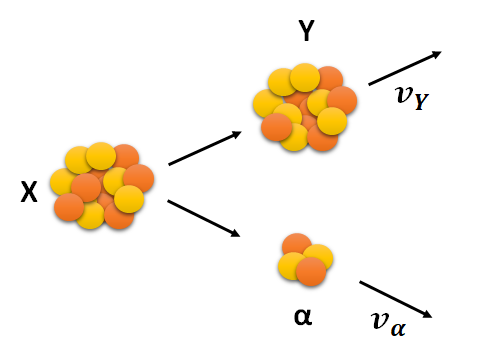
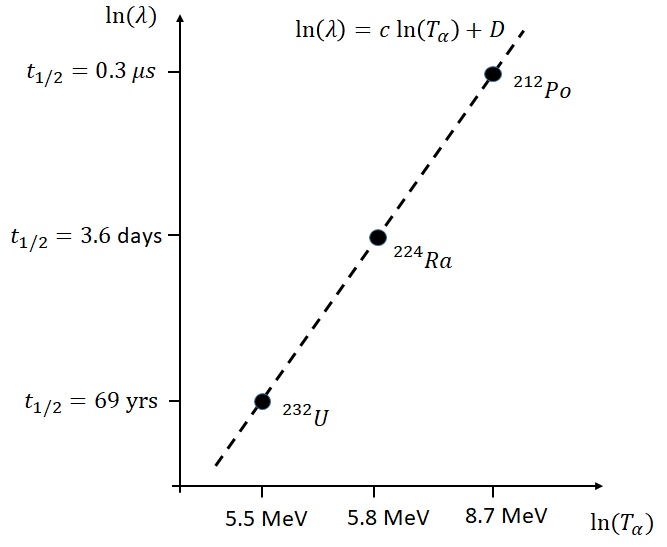
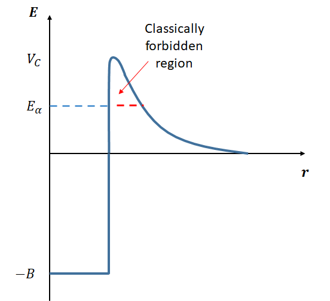

Physics and Astronomy, University of Kent
We now move on to looking in more detail at different modes of radioactive decay, beginning with alpha decay. First ensure you are happy with the basic idea of radioactive decay rates reviewed in Section 1 and the Q-value discussed in Section 2.
Some heavy nuclei are found to be unstable to the ejection of a helium 4-nucleus (2 protons and 2 neutrons), known as alpha decay (\(\alpha\)-decay). This tends to occur for heavier nuclei, particularly those where the proton-to-neutron ratio is too high (recalling that larger nuclei require an excess of neutrons to overcome the Coulomb force.) The process is spontaneous, i.e. it doesn’t need to be triggered by anything. Below we will study some basic properties of \(\alpha\)-decay, before looking at the underlying quantum physics.
Alpha decay can only occur if the energetics are favourable. We require that the binding energies of the resultant daughter particles sum to more than the binding energies of the parent particle. The generic equation for \(\alpha\)-decay is:
\[\begin{equation} {}^{A}_{Z}\text{X}_N \rightarrow {}^{A-4}_{Z-2}\text{Y}_{N-2} + \alpha, \end{equation}\]
where we can see that the parent nucleus has lost 4 units of atomic mass number (A) and 2 units of atomic number (Z), and where
\[\begin{equation} \alpha = {}^{4}_{2}\text{He}_2. \end{equation}\]

By conservation of mass-energy: \[\begin{equation} m_X c^2 = m_Y c^2 + T_Y + m_{\alpha}c^2 + T_{\alpha}, \end{equation}\]
where \(T_Y\) is the resulting kinetic energy of the daughter nucleus and \(T_\alpha\) is the kinetic energy of the \(\alpha\) particle. We define the Q-factor as the sum of the kinetic energy released \[\begin{equation} Q = T_Y + T_\alpha, \end{equation}\]
such that \[\begin{equation} Q = (m_X - m_Y - m_\alpha)c^2. \end{equation}\]
The total numbers of protons and neutrons does not change, so the Q-factor really depends on the differences in binding energies between the parent and daughter particles, \[\begin{equation} Q = (B_{\alpha} + B_Y - B_X). \end{equation}\]
Since we cannot have negative kinetic energy, it must be the case that \(Q > 0\) and \(\alpha\)-decay cannot otherwise occur. So we require that the combined binding energy of the daughter particles is greater than the parent particle, i.e. they are more tightly bound. Recalling that binding energy is really a negative thing, this releases kinetic energy which goes into the daughter particles. This also explains why emission of other sized groups of protons and neutrons mostly does not occur (with one or two rare exceptions), these are less tightly bound and hence the calculations for these hypothetical decays would give \(Q < 0\).
For example, \[\begin{equation} {}^{228}_{90}\text{Th} \rightarrow {}^{224}_{88}\text{Ra} + \alpha \end{equation}\]
has a Q-value of \(5.5~\rm MeV\), whereas a decay resulting in the emission of a proton, rather than an \(\alpha\) particle,
\[\begin{equation} {}^{228}_{90}\text{Th} \rightarrow {}^{227}_{87}\text{Ac} + {}^{1}_{1}\text{H} \end{equation}\]
has a Q Value of \(-6.4~\rm MeV\), i.e. it cannot occur.
Therefore, we can see that it is the very high binding energy (i.e low mass) of an \(\alpha\) particle (\(\rm 28.3~MeV\)) that is the reason for this particle to be ejected, since this makes \(Q > 0\) more likely.
Nuclides which decay by \(\alpha\)-decay are those with a deficit of neutrons (excess of protons) with respect to the line of stability. (Recall that larger nuclei require \(N \approx 1.4Z\) to be stable due to the effect of the Coulomb interaction). \(\alpha\)-decay moves the daughter particle slightly closer to the line of stability as the required excess of neutrons is smaller for lighter nuclei. We usually find that \(Q > 0\) only occurs for \(A > 150\), and \(Q \approx 6~\mathrm{MeV}\) is typical.
We find that there is a structure to the observed kinetic energy of the \(\alpha\) particles: the energies are found to take one of a set of discrete energies rather than continuous spectrum. We also observe an enormous range in the decay rates of different nuclei by \(\alpha\)-decay; the range in half-lives is from \(10^{-7} \rm~s\) to \(10^{10}\rm~years\), some 24 orders of magnitude. Any model we develop should therefore explain these two experimental observations.
Geiger and Nuttall found, in 1911, a simple empirical relationship between the decay constant, \(\lambda\), and the \(\alpha\) particle kinetic energy, \(T_{\alpha}\), \[\begin{equation} \ln(\lambda) = c\ln(T_{\alpha}) + D \end{equation}\]
where \(c\) and \(D\) are fitted constants. Remarkably, this relationship holds roughly true over a huge range of decay constants and energies. This is illustrated in Figure 2, where it should be remembered that \(t_{1/2} = \ln(2) / \lambda\).

Since the \(\alpha\) particle is much lighter than the daughter nucleus, most of the energy released by \(\alpha\) decay goes into kinetic energy of the \(\alpha\) particle (i.e. \(T_\alpha \gg T_Y\)). We can perform this calculation for a specific decay as follows.
Consider the decay: \[\begin{equation} {}^{214}_{84}\text{Po} \rightarrow {}^{210}_{82}\text{Pb} + \alpha \end{equation}\]
The binding energies of \({}^{214}_{84}\text{Po}\), \({}^{210}_{82}\text{Pb}\) and \(\alpha\) are 1.66601 GeV, 1.64555 GeV, and 28.296 MeV, respectively. The Q-value for this decay is therefore: \[\begin{equation} Q = B_{Pb} + B_{\alpha} - B_{Po} = 1.64555~\mathrm{GeV} + 28.296~\mathrm{MeV} - 1.66601~\mathrm{GeV} = 7.82~\mathrm{MeV} \end{equation}\]
This is positive, as it must be for \(\alpha\)-decay to occur.
If all this energy went to the \(\alpha\) particle it would have a speed of \[\begin{equation} v = \sqrt{\frac{2Q}{m}} = \sqrt{\frac{2 \times (7.82~\mathrm{MeV})}{3727.37~\mathrm{MeV/c^2}}} = 0.064c \approx 20000~\mathrm{km/s}, \end{equation}\]
where we used that \(m_{\alpha} = 3727.37~\mathrm{MeV/c^2}\). The speed, while large, is still far short of \(c\), and so no relativistic corrections are required here for an approximate result.
In reality, some of the energy will go into kinetic energy of the daughter nucleus. We can see how much using conservation of momentum. Working in the rest frame of the parent nucleus, we have: \[\begin{equation} m_Yv_Y = -m_{\alpha}v_{\alpha}, \end{equation}\] where we have denoted the daughter nucleus with \(Y\). Hence the ratio of the speeds is \[\begin{equation} \frac{v_{\alpha}}{v_Y} = \frac{m_{Y}}{m_{\alpha}}. \end{equation}\] In the case of the reaction above this ratio is approximately the ratio of atomic mass numbers, \(210 / 4 \approx 52\). In terms of energy: \[\begin{equation} \frac{E_{\alpha}}{E_Y} = \frac{m_{\alpha}v_{\alpha}^2}{m_Yv_Y^2} = \frac{m_{\alpha}}{m_Y} \frac{m_Y^2}{m_{\alpha}^2} = \frac{m_Y}{m_{\alpha}}. \end{equation}\]
and so the same ratio applies, 98% of the energy goes to the \(\alpha\) particle.
To understand the decay rates of different nuclei by \(\alpha\)-decay, we must understand what prevents nuclei from simply decaying in the cases where \(Q>0\). In order for a single nucleus to split into a daughter nucleus and an alpha particle, we can imagine an intermediate state where the \(\alpha\) particle and the daughter nucleus have just split apart, but are still close enough for the strong interaction to be a consideration. We can therefore think of the formed \(\alpha\) particle sitting in the potential well of the nucleus, as shown in Fig 3. Note that here the potential well is due to both the strong nuclear interaction and the Coulomb interaction.
In order to be free of the nucleus, the \(\alpha\) particle must pass through a potential barrier. Classically it does not have sufficient energy, and this is only possible using quantum mechanical tunnelling, i.e. due to the wavefunction being non-zero beyond the barrier. (If the energy was above the barrier than the decay would have happened almost immediately and we wouldn’t observe it). This explains the random nature of the decay. It also explains the huge range in decay rates.

This potential barrier is sometimes called the Coulomb barrier, although this can be slightly confusing because the Coulomb force is tending to push the \(\alpha\) particle away from the nucleus, it is really the strong interaction that needs to be overcome.
Working semi-classically, we can imagine the \(\alpha\) particle ‘bouncing’ within the well, reflecting off the barrier with frequency \(f\). If the probability of tunnelling through the barrier at each strike is \(P\) then the decay rate \(\lambda\) can be approximated simple as
\[\begin{equation} \lambda = fP. \end{equation}\]
We can estimate \(f\) to be roughly \(v/a\), where \(v\) is the speed of the \(\alpha\) particle as it bounces between the walls (related simply to its kinetic energy, \(K\), and mass \(m\) by \(v=\sqrt{2mK}\).
We can obtain a rough estimate of the height of the barrier by computing the Coulomb potential between an alpha particle and the daughter nucleus that are just touching,
\[\begin{equation} U = k \frac{q_1q_1}{r} = k \frac{ 2(Z-2)e^2}{r} \end{equation}\] We obtain an estimate of their radii using \(r = r_oA^{1/13}\) and hence the separation of their centres when just touching is the sum of the two radii.
For example, for the decay
\[\begin{equation} {}^{211}_{83}\text{Bi} \rightarrow {}^{207}_{81}\text{X} + \alpha \end{equation}\] the daughter nucleus has \(A = 207\) and the \(\alpha\) particle, as always, has \(A=4\). The two radii can be estimated using \[\begin{equation} r_X = (1.2~\mathrm{fm})A^{1/3} = 7.1~\mathrm{fm}, \end{equation}\] and \[\begin{equation} r_{\alpha} = 1.9 ~\mathrm{fm}, \end{equation}\] giving a separation of \(9.0 ~\mathrm{fm}\).
We then estimate the Coulomb barrier height as \[\begin{equation} U =k \frac{ 2(Z-2)e^2}{r} = (9\times 10^9)\frac{ 2(81-2)(1.6\times 10^{-19})^2}{9\times 10^{-15}} = 4.0\times 10^{-12}~\mathrm{J} = 25~\mathrm{MeV}. \end{equation}\]
As expected, this is (several times) larger than the typical kinetic energies of \(\alpha\) particles (and so several times larger than the Q-value). Therefore, classically, this barrier cannot be penetrated (otherwise the decay would be immediate), and so \(\alpha\)-decay requires quantum tunnelling. This is what leads to the stochastic (random) nature of \(\alpha\)-decay.
To determine the probability of the \(\alpha\) particle tunnelling through the Coulomb barrier we need to solve the Schrodinger equation and hence integrate the square of the wavefunction beyond the barrier. This is quite difficult, and you are not expected to do this, but some of the details can be found in Krane Section 8.4. For interest, the result is that the probability is given by
\[\begin{equation} P=\exp{(-2G)} \end{equation}\]
where \(G\), the Gamow factor, is given by \[\begin{equation} G = \sqrt{\frac{2m}{\hbar^2}}\int_{a}^{b}[V(r)-Q]^{1/2} dr \end{equation}\]
where \(a\) is the radius of the well, \(b\) is the distance at which the \(\alpha\) particle would be classically free (i.e. its kinetic energy is above the potential), \(Q\) is the kinetic energy of the \(\alpha\) particle, \(m\) is its mass, and \(V(r)\) is the height of the Coulomb barrier.
The important thing to note here is that the probability depends on the exponential of the Gammow Factor, which itself depends on the \(\alpha\) particle energy. This shouldn’t be surprising, the exponential came up when you studied the finite square well.
Due to the exponential, small changes in the Q-value therefore leads to a huge change in the probability and hence a huge change in the decay rate and half life. In fact a change in the Q-value by a factor of 2 can change the half life from a tiny fraction of a second to the age of the Universe.